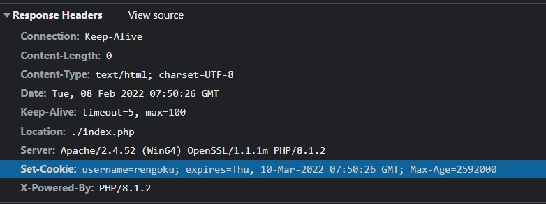
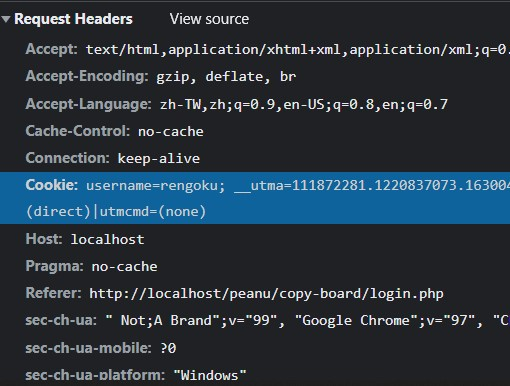
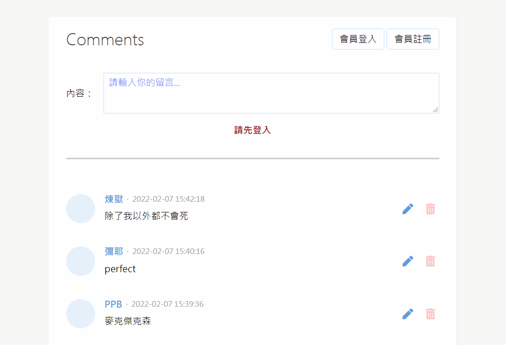

想記下來。
簡述
因為 HTTP 協議本身是「無狀態」的，所以要讓它可以記得「每個 request 之間的關聯性」才能做出登入機制。
登入的流程是這樣子：
- 填好帳密後送出表單 => 第一個 request
- Server 確認帳密無誤，重新導回首頁 => 第二個 request （回到首頁也會發一個 request）
最簡單的方式
Server 可以透過 cookie 來做設定，讓瀏覽器在下一次的 request 自動把 cookie 帶上。
拿留言板的例子來舉例：
1 | /* handle_login.php */ |
當登入成功後，可以打開 devtool 看看這之間發生了什麼。
首先，Server 會回傳 Set-Cookie 這個 header，也就是 PHP 中寫入的值 username=$username：

接著被導回首頁後，會看到 request header 就會自動把剛剛的 cookie 給帶上來：

這時候 index.php 就可以利用 cookie 的值來檢查這個 user 有沒有登入：
1 | /* index.php */ |
最後就完成登入機制了：

這就是最最最基本的登入功能了，只是這個做法有個問題，就是別人可以竄改 cookie 值來假冒別人身分，這邊我另外開一篇文章來解釋，請參考 當 Cookie 被竄改會怎麼樣？